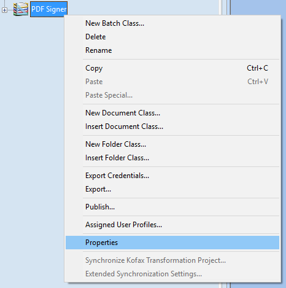
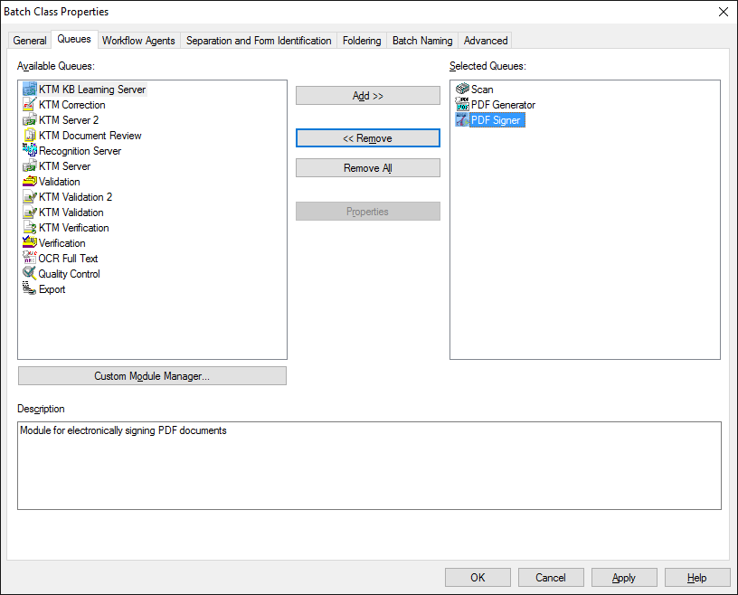

A

Kötegosztály helyzetérzékeny menüje
A megjelenő ablakban kattintsunk a Queues (folyamatelemek) fülre.
Kötegosztály folyamatelemeinek beállítása
A bal oldali Available queues (elérhető folyamatelemek) listában válasszuk ki a PDF Generator-t és kattintsunk a középen lévő Add >> (Hozzáadás) gombra, mire a PDF Generator átkerül a jobb oldali Selected queues (kiválasztott folyamatelemek) listába. A lépést ismételjük meg a PDF Signer folyamatelemmel is. Ezt követően a Selected queues (kiválasztott folyamatelemek) listában fogjuk meg az egérbal gombját nyomva tartva a PDF Signer-t és húzzuk a PDF Generator alá.
Figyelem! A Selected Queues (kiválasztott folyamatelemek) listába kötelező felvenni mind a PDF Generator, mind a PDF Signer modulokat, és a PDF Generator modulnak a PDF Signer előtt kell lennie!
Természetesen a listában lehet több folyamatelem is, sőt a PDF Generator és a PDF Signer modulok közé további folyamatelemek ékelődhetnek (pl. validálás). A Selected Queues (kiválasztott folyamatelemek) listának az alábbiak szerint kell kinéznie:

Kötegosztály folyamatelemeinek helyes beállítása